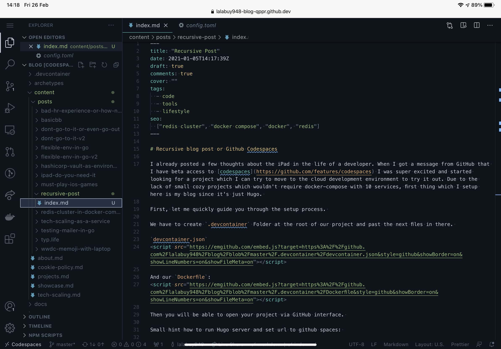

Recursive blog post or Github Codespaces
I already posted a few thoughts about the iPad in the life of a developer. When I got a message from GitHub that I have beta access to codespaces I was super excited and started looking for a project which I can try to move to the cloud development environment to try it out. Due to the lack of small cozy projects which wouldn’t require docker-compose with 10 services, the first thing which I setup here is my blog since it’s just Hugo.
First, let me quickly guide you through the setup process.
We have to create .devcontainer Folder at the root of our project and paste the next files in there.
devcontainer.json
{
"name": "mrPopov Container",
"build": {
"dockerfile": "Dockerfile"
},
"settings": {
"terminal.integrated.shell.linux": "/bin/zsh",
"go.useGoProxyToCheckForToolUpdates": false,
"go.gopath": "/go"
},
"extensions": [
"golang.Go"
],
"forwardPorts": [
1313,
]
}
And our Dockerfile:
FROM mcr.microsoft.com/vscode/devcontainers/go:dev-1.15
RUN apt-get update && export DEBIAN_FRONTEND=noninteractive \
&& apt-get -y install --no-install-recommends git wget zsh curl
RUN curl -L https://github.com/gohugoio/hugo/releases/download/v0.74.3/hugo_0.74.3_Linux-64bit.tar.gz | tar xvz
RUN mv hugo /usr/bin/hugo
EXPOSE 1313
Then you will be able to open your project via GitHub interface.
Small hint how to run Hugo server and set url to github spaces:
hugo serve -D --baseUrl=https://$CLOUDENV_ENVIRONMENT_ID-1313.apps.codespaces.githubusercontent.com/ --appendPort=false
After trying to set this thing up and make a fully mobile environment to work on the fly.. I’m not that excited anymore, to be honest. The interface has quite some delay, plus working on iPad is definitely not the same coding experience than on laptop. This is really big step further in cloud native environment, but for “coding on the fly” I will wait for native iPad IDE.